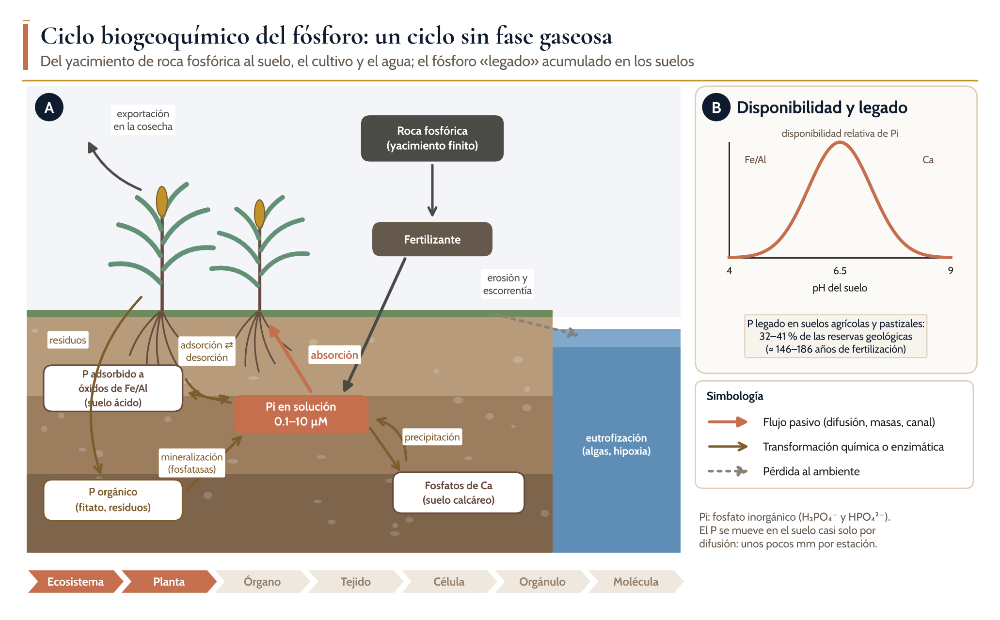
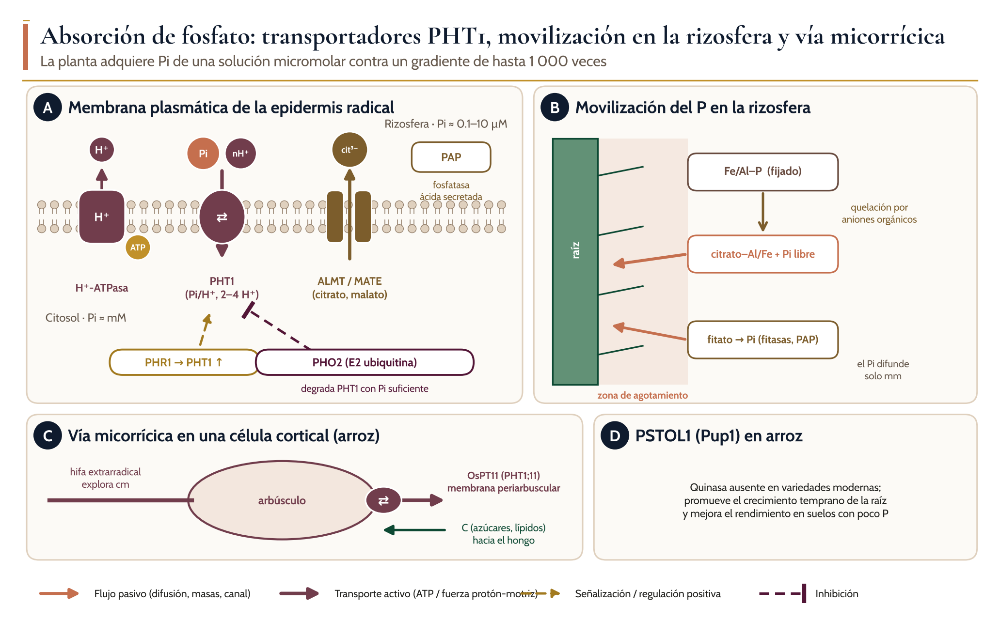
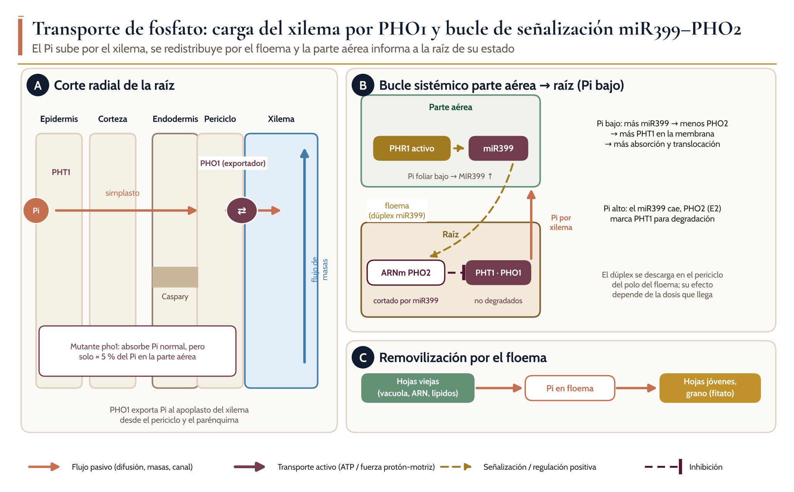
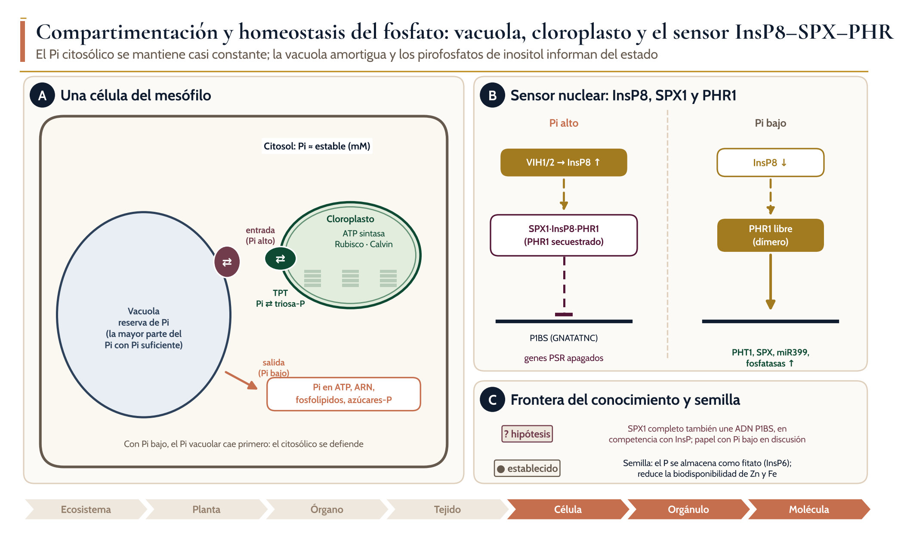
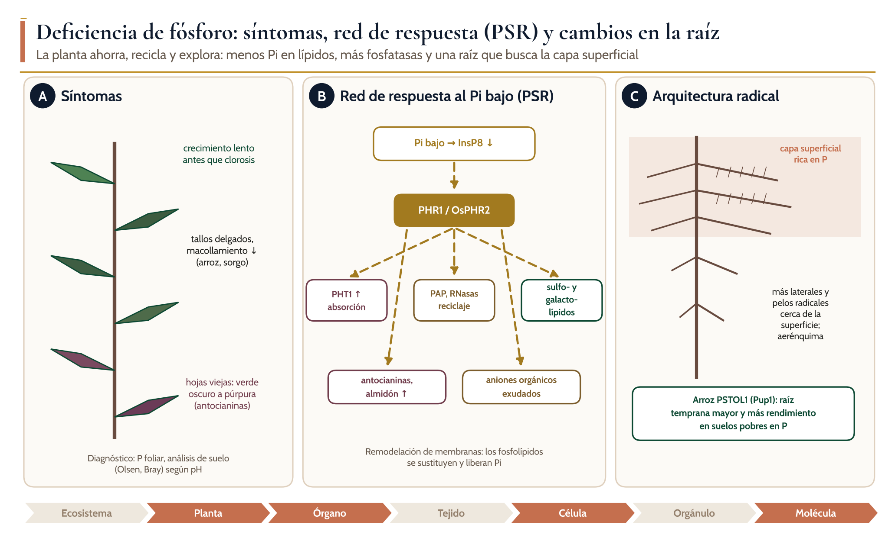
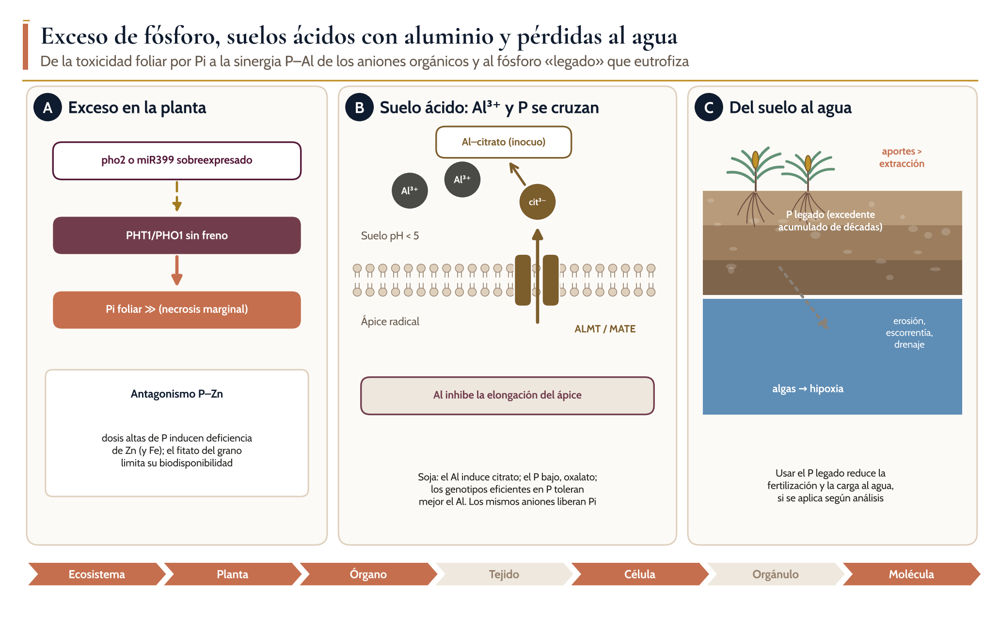

Ciclos biogeoquímicos, absorción, transporte, distribución y homeostasis del agua y los nutrientes en las plantas
P
Módulo 4. Fósforo
Dr. Juan Patishtan Pérez Licenciatura avanzada, maestría y doctorado · Agosto–diciembre 2026

Introducción
Objetivos de aprendizaje
El fósforo es el segundo nutriente que con más frecuencia limita el crecimiento de los cultivos, después del nitrógeno. Constituye en torno a 0.2–0.5 % de la masa seca, pero sin él no hay ATP, ácidos nucleicos, fosfolípidos de membrana ni azúcares fosfatados: es la moneda energética y estructural de la célula. A diferencia del nitrógeno y del carbono, el ciclo del P no tiene fase gaseosa. Todo el P agrícola procede, en última instancia, de yacimientos de roca fosfórica finitos y concentrados en pocos países, y el que se pierde de los campos termina en ríos, lagos y costas, donde provoca eutrofización.
1Describir los compartimentos y flujos del ciclo del P y explicar por qué la disponibilidad depende del pH del suelo.
2Explicar la absorción de Pi por los simportadores PHT1, la movilización en la rizosfera y la vía micorrícica.
3Analizar la carga del xilema por PHO1 y el bucle sistémico miR399–PHO2 que coordina parte aérea y raíz.
4Integrar la compartimentación vacuolar y el sensor InsP8–SPX–PHR1 en un modelo de homeostasis celular.
5Interpretar síntomas y respuestas a la deficiencia, y la interacción del P con el Al y el Zn.
6Proponer estrategias para aprovechar el P «legado» del suelo y mejorar la eficiencia de uso del P en los cinco cultivos.
4.1 Ciclo biogeoquímico del fósforo
Ciclo del fósforo en un agroecosistema
Ala roca fosfórica da origen al fertilizante; en el suelo, el Pi de la solución se intercambia con el P adsorbido a óxidos de Fe y Al, el P orgánico y los fosfatos de Ca (flechas pardas: transformaciones químicas y biológicas). Las salidas son la cosecha, la erosión y la escorrentía (flecha punteada) hacia el agua, donde causan eutrofización.
Bdisponibilidad relativa de Pi en función del pH y magnitud del P legado de los suelos agrícolas.
4.1 Ciclo biogeoquímico del fósforo
Formas de P en el suelo y sus controles
Forma
Ejemplo
Disponibilidad
Favorecida por
Cómo se moviliza
Pi en solución
H₂PO₄⁻, HPO₄²⁻
Inmediata
pH 6–7, fertilización reciente
Difusión hacia la raíz
Adsorbido
Pi sobre óxidos de Fe/Al
Lenta
Suelos ácidos, oxisoles, andisoles
Aniones orgánicos (citrato, malato)
Precipitado
Fosfatos de Ca
Lenta
Suelos calcáreos, pH > 7.5
Acidificación de la rizosfera
Orgánico
Fitato, ésteres, ácidos nucleicos
Variable
Residuos, abonos orgánicos
Fosfatasas ácidas y fitasas
Microbiano
P de la biomasa
Reciclable
Actividad biológica
Recambio microbiano; micorrizas
4.1 Ciclo biogeoquímico del fósforo
● Mecanismo establecido
Concepto clave: el P disponible no es el P total
1
El análisis de suelo mide una fracción extraíble (Olsen en suelos neutros o calcáreos; Bray en suelos ácidos), no el P total.
2
Un suelo puede tener mucho P total y, aun así, deficiencia, si el Pi está fijado y la raíz no explora el volumen donde se encuentra.
3
El cultivo solo agota una capa de pocos milímetros alrededor de la raíz: la arquitectura radical, los pelos radicales y las micorrizas determinan el volumen de suelo explorado.
4.2 Absorción de fosfato
Absorción de fosfato

Aen la membrana plasmática de la epidermis radical, la H⁺-ATPasa genera la fuerza protón-motriz que impulsa al simportador PHT1 (Pi/H⁺); los canales ALMT y los transportadores MATE exportan citrato y malato, y las fosfatasas ácidas (PAP) se secretan; PHR1 induce PHT1 y PHO2 lo degrada con Pi suficiente.
Bmovilización del P en la rizosfera y zona de agotamiento de pocos milímetros.
Cvía micorrícica en arroz; OsPT11 absorbe en la membrana periarbuscular el Pi que entrega el hongo, que recibe carbono a cambio.
Del gen PSTOL1 del locus Pup1.
4.2 Absorción de fosfato
● Mecanismo establecido
Variación natural útil para el mejoramiento: PSTOL1 en arroz
1
El locus Pup1, identificado en la variedad tradicional aus Kasalath, contiene el gen de una proteína quinasa, PSTOL1, ausente del genoma de referencia y de las variedades modernas intolerantes a la deficiencia de P (Gamuyao et al., 2012).
2
La sobreexpresión de PSTOL1 aumentó significativamente el rendimiento en suelos deficientes en P porque estimula el crecimiento temprano de la raíz, lo que permite adquirir más P y otros nutrientes (Gamuyao et al., 2012).
3
Pup1 se transfirió por retrocruzamiento asistido por marcadores a la megavariedad india MTU 1010, que rinde poco en suelos con P bajo (Anila et al., 2018); las revisiones recientes resumen su uso en programas de mejoramiento (Thomas y Kushwaha, 2025).
4.3 Transporte a corta y larga distancia
Transporte de fosfato

Acorte radial de raíz; PHT1 absorbe el Pi en la epidermis, el Pi cruza la corteza por el simplasto y PHO1 lo exporta al apoplasto del xilema desde el periciclo; el flujo de masas lo lleva a la parte aérea.
Bbucle sistémico; con Pi bajo, PHR1 activa miR399 en la parte aérea, el dúplex viaja por el floema, corta el ARNm de PHO2 en la raíz y libera a PHT1 y PHO1 de la degradación.
Cremovilización del Pi de hojas viejas hacia hojas jóvenes y grano.
4.3 Transporte a corta y larga distancia
Proteínas que controlan la adquisición y distribución del P
Proteína
Función
Localización
Evidencia en cultivos
PHT1 (OsPHT1)
Simporte Pi/H⁺ de alta afinidad
Epidermis y corteza radical
Expresión variable entre genotipos de arroz
OsPT11 (PHT1;11)
Absorción micorrícica
Membrana periarbuscular
Específico de la simbiosis en arroz
PHO1
Exportación de Pi al xilema
Periciclo y parénquima de la estela
Homólogos en cereales
PHO2 (E2 ubiquitina)
Degradación de PHT1 con Pi suficiente
Raíz
Mutantes con exceso de Pi foliar
miR399
Señal móvil parte aérea → raíz
Floema
Detectado en savia de colza y calabaza
PSTOL1
Quinasa que estimula la raíz temprana
Raíz
Pup1 en arroz; mejoramiento asistido
4.4 Distribución, compartimentación y homeostasis
Compartimentación y homeostasis del fosfato

Aen la célula del mesófilo, la vacuola almacena Pi con suministro suficiente y lo libera con suministro bajo; el translocador TPT del cloroplasto intercambia Pi por triosas fosfato; el Pi citosólico se mantiene estable.
Bsensor nuclear; con Pi alto, VIH1/2 sintetizan InsP8 y el complejo SPX1–InsP8 secuestra a PHR1, que no se une a P1BS; con Pi bajo, PHR1 libre activa los genes PSR.
Chipótesis reciente sobre SPX1 y almacenamiento de P como fitato en la semilla.
4.4 Distribución, compartimentación y homeostasis
? Hipótesis o debate
Debate: ¿SPX1 solo frena a PHR1?
1
El modelo aceptado asigna a SPX1 una función solo con Pi alto, como regulador negativo de PHR1 dependiente de pirofosfatos de inositol.
2
Whitfield et al. mostraron que SPX1 completo se une a los elementos P1BS del ADN con afinidad similar a la de los pirofosfatos de inositol, y que ambos ligandos compiten entre sí; proponen una función de SPX1 con Pi bajo (Whitfield et al., 2026).
3
Las proteínas 14-3-3 GRF6 y GRF8 también inhiben a PHR1, en paralelo y sin interactuar con SPX1 (Song et al., 2025). El control de PHR1 parece tener varias capas que aún no se integran en un solo modelo.
4.4 Distribución, compartimentación y homeostasis
Distribución y control del P en cada nivel de organización
Nivel
Dónde se distribuye el P
Mecanismo de control
Ejemplo en cultivos
Ecosistema
Roca, suelo, biomasa, agua
pH, adsorción, erosión
P legado en suelos agrícolas
Planta
Tejidos jóvenes y semillas
Removilización por el floema
Fitato del grano de cereales y soja
Órgano
Raíz o parte aérea
PHO1 y bucle miR399–PHO2
Exceso de Pi foliar en pho2
Célula
Citosol (estable) y vacuola (reserva)
Transportadores vacuolares con SPX
Amortiguación con Pi variable
Orgánulo
Cloroplasto: ATP, azúcares-P
TPT (Pi ⇄ triosa-P)
Fotosíntesis limitada por Pi
Molécula
InsP8 como señal del estado de Pi
VIH1/2, SPX1, PHR1, P1BS
OsSPX1–OsPHR2 en arroz
4.5 Funciones del fósforo en la planta
Funciones del fósforo y el proceso en que interviene
Función
Moléculas o procesos
Importancia agronómica
Energía
ATP, ADP, pirofosfato
Toda la síntesis y el transporte activo
Información genética
ADN y ARN (esqueleto fosfodiéster); ARN ribosómico
Crecimiento y síntesis de proteínas
Membranas
Fosfolípidos
Integridad celular; se sustituyen con deficiencia
Metabolismo del C
Azúcares fosfatados; Ciclo de Calvin; TPT
Fotosíntesis y exportación de sacarosa
Regulación
Fosforilación de proteínas; pirofosfatos de inositol
Señalización y homeostasis
Reserva
Fitato (InsP6) en la semilla
Vigor de la plántula; reduce la biodisponibilidad de Zn y Fe
4.6 Deficiencia, exceso y toxicidad
Deficiencia de fósforo

Asíntomas, con hojas viejas verde oscuro a púrpura por antocianinas, tallos delgados y menos macollos.
Bred de respuesta a la deficiencia (PSR); la caída del InsP8 libera a PHR1/OsPHR2, que activa la absorción, el reciclaje, la remodelación de membranas, la acumulación de antocianinas y almidón, y la exudación de aniones orgánicos.
Ccambios en la arquitectura radical y efecto de PSTOL1 en arroz.
4.6 Deficiencia, exceso y toxicidad
Exceso de fósforo y pérdidas

Ala pérdida de PHO2 o la sobreexpresión de miR399 deja sin freno la absorción y la translocación, y el Pi se acumula en las hojas; antagonismo P–Zn.
Ben el ápice radical de un suelo ácido, los canales ALMT y los transportadores MATE exportan citrato, que compleja el Al³⁺ y libera Pi.
Cel P legado del suelo llega al agua por erosión, escorrentía y drenaje y provoca eutrofización.
4.6 Deficiencia, exceso y toxicidad
Contraste entre deficiencia y exceso de fósforo
Aspecto
Deficiencia
Exceso
Síntoma visual
Hojas verde oscuro a púrpura; crecimiento lento
Necrosis foliar (mutantes pho2); deficiencia inducida de Zn
Señal
InsP8 ↓; PHR1 activo; miR399 ↑
InsP8 ↑; PHO2 degrada PHT1
Raíz
Más laterales y pelos superficiales; exudados
Menor inversión en la raíz y en micorrizas
Rendimiento
Menos macollos, llenado deficiente
Sin respuesta; costo económico
Ambiente
Minado del P del suelo
Eutrofización por erosión y escorrentía
4.7 Respuestas adaptativas y regulación
? Hipótesis o debate
Debate: ¿absorber más o usar mejor?
1
Aumentar la absorción sin control puede causar toxicidad foliar, como en los mutantes pho2; las mejoras más útiles parecen ser las que amplían la exploración radical, como PSTOL1.
2
Los cultivos que aprovechan el P legado podrían reducir la fertilización, pero aún faltan ensayos de campo de largo plazo con genotipos eficientes.
3
Las micorrizas aportan P a cambio de carbono; su beneficio neto depende del suelo y de la dosis de P aplicada.
4.7 Respuestas adaptativas y regulación
Estrategias frente a la deficiencia de P
Estrategia
Rasgo
Mecanismo
Evidencia
Explorar más suelo
PSTOL1 (Pup1)
Crecimiento temprano de la raíz
Arroz; MTU 1010 mejorado
Movilizar P fijado
Exudación de citrato, malato, oxalato
Competencia por sitios de adsorción; quelación
Soja, especies de suelos ácidos
Simbiosis
Micorrizas arbusculares
OsPT11 en la membrana periarbuscular
Arroz, maíz, sorgo
Reciclar P orgánico
Fosfatasas ácidas y fitasas
Hidrólisis de ésteres y fitato
Inducidas por PHR1
Ahorrar P
Sustitución de fosfolípidos
Sulfo- y galactolípidos
Respuesta PSR general
Regulación fina
InsP8–SPX–PHR1; 14-3-3
Ajuste de los genes PSR
Objetivo de edición génica
4.8 Implicaciones agronómicas
Comparación de los cinco cultivos de referencia frente al fósforo
Cultivo
Situación típica
Etapa crítica
Riesgo principal
Manejo clave
Arroz
Inundación: reducción de Fe³⁺ y liberación de Pi
Establecimiento y macollamiento
Deficiencia en suelos ácidos de secano
Variedades con Pup1; P localizado al trasplante
Maíz
Suelos ácidos o calcáreos según región
Primeras semanas (raíz pequeña, suelo frío)
Hojas púrpura y menor crecimiento inicial
P en banda cerca de la semilla; análisis de suelo
Sorgo
Suelos pobres de zonas semiáridas
Establecimiento
Deficiencia con baja humedad (menos difusión)
Micorrizas; P localizado; rotación
Caña de azúcar
Cultivo perenne de varios cortes
Plantación y rebrote
Agotamiento con los cortes
P en el surco de plantación; residuos
Soja
Alta demanda para la nodulación
Nodulación y llenado
Suelos ácidos con Al; menos fijación de N
Encalado; genotipos eficientes en P
4.8 Implicaciones agronómicas
▲ Para el agrónomo
Para el agrónomo: cinco decisiones que dependen del fósforo
1
1. Diagnóstico: elegir el método de análisis según el pH (Olsen o Bray) y no aplicar P donde el legado es alto.
2
2. Colocación: aplicar en banda o en el surco; el P se mueve solo milímetros.
3
3. pH: encalar los suelos ácidos para reducir la fijación del P y la toxicidad del Al.
4
4. Genética: usar variedades con raíces vigorosas tempranas, como las de arroz con Pup1.
5
5. Conservación: reducir la erosión y la escorrentía con cobertura y labranza mínima para proteger el agua.
Cierre
Síntesis
01
El ciclo del P no tiene fase gaseosa; depende de reservas de roca finitas, y sus pérdidas al agua causan eutrofización.
02
La disponibilidad depende del pH: el Pi se fija con Fe y Al en suelos ácidos y con Ca en suelos calcáreos; el P legado equivale a 32–41 % de las reservas geológicas.
03
PHT1 absorbe el Pi con protones; los aniones orgánicos, las fosfatasas y las micorrizas (OsPT11) amplían el acceso al P fijado.
04
PHO1 carga el xilema; el bucle miR399–PHO2 informa a la raíz del estado de la parte aérea.
05
La vacuola amortigua el Pi citosólico; el InsP8 informa del estado de Pi a SPX1, que controla a PHR1.
06
PSTOL1, la exudación de aniones orgánicos y la gestión del P legado son las palancas principales para producir con menos fertilizante.
Autoevaluación
Preguntas de autoevaluación
1Un oxisol con pH 4.8 tiene P total alto y P Bray bajo. Explique la contradicción y proponga dos medidas de manejo.
2Prediga el contenido de Pi en hojas y raíces de un mutante pho1 y de un mutante pho2. Justifique con la función de cada proteína.
3Diseñe un experimento de injerto que demuestre que miR399 es una señal que viaja de la parte aérea a la raíz.
4¿Por qué el Pi no puede ser la señal que percibe SPX1? Describa el papel del InsP8 y de VIH1/2.
5Explique por qué la exudación de citrato beneficia a la soja en un suelo ácido tanto por el P como por el Al.
Fuentes verificadas
28
referencias verificadas: artículos con DOI, consultados en bases bibliográficas, y libros de texto. La lista completa, con autores, año, revista y enlace, está en el manual del módulo.